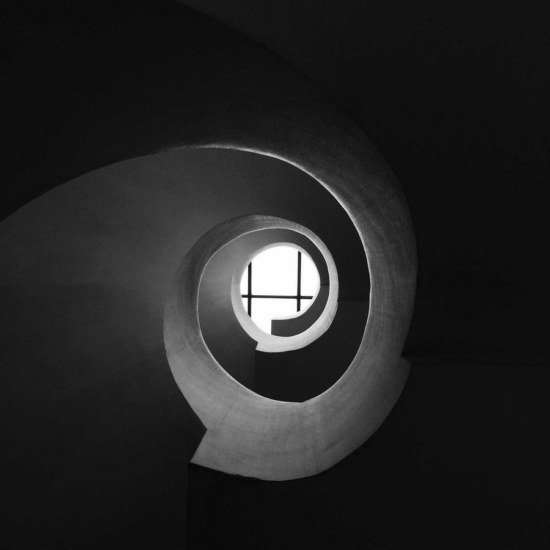

Window positions, never pixels.
Hush asks macOS which window is in front and where it sits. It never asks for Screen Recording and never sees what’s inside a window.
Hush is a free menu bar app for your Mac. It quietly darkens every window except the one you’re in.
Click any window on the desktop, or press ⌃⌥D to switch dimming off and on.
These are screenshots of Hush itself, in dark mode on macOS 27. It follows your Mac’s light or dark appearance and accent colour.


Hush asks macOS which window is in front and where it sits. It never asks for Screen Recording and never sees what’s inside a window.
There is nothing to sign up for and nothing counting what you do. Your settings stay in your Mac’s preferences.
The only time Hush goes online is to ask GitHub whether there’s a new version. Turn that off in Settings whenever you like.

Free for macOS 14 and later, on Apple silicon and Intel. Early preview: not yet notarized by Apple, so macOS asks once before opening it. The level you pick here also sets the demo at the top.